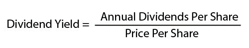
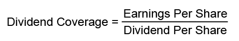

Introduction To Dividends: Introduction
A dividend is a distribution of a portion of a company's earnings to a class of its shareholders. Dividends can be in the form of cash, stock, and less commonly, property. Most stable companies offer dividends to shareholders. Often the stock prices of these financially secure companies do not move much, and dividends are offered as a way to entice, reward and retain investors.
Investing in dividend-paying stocks can be an effective method of building long-term wealth. This guide with introduce dividend terminology and explore the basics of dividends - from how dividends work, to researching, reinvestment and taxes.
Introduction To Dividends: Terms To Know And Other Basics
Cash Dividend
Cash payments made to stockholders, paid on a per share basis, quoted as a dollar amount or as a percentage of the current market value. Cash dividends are typically paid out of the company's current earnings or accumulated profits.
Date Of Record
The date the company uses to determine its shareholders or "holders of record."
Declaration Date
The date a company's Board of Directors announces an upcoming dividend.
Dividend
A distribution of a portion of a company's earnings paid to its eligible shareholders. Dividends can be in the form of cash, stock and property.
Dividend Coverage Ratio
The ratio between a company's earnings and its net dividend to shareholders. This ratio helps investors measure if a company's earnings are sufficient to cover its dividend obligations. Dividend coverage is calculated by dividing earnings per share by the dividend per share.
Dividend Reinvestment Plan (DRIP)
A plan offered by certain dividend-paying corporations that allows you to automatically reinvest cash dividends by purchasing additional shares of stock on the dividend payment date.
Dividend Yield
A financial ratio that illustrates how much a company pays out in dividends each year relative to its share price. It is calculated by dividing the annual dividend per share by the current price of the stock.
Ex-Dividend Date
The date on or after which a stock is traded without a previously declared dividend.
One-time Dividend
A special dividend paid in addition to regular cash dividends.
Payment Date
The date a declared dividend is scheduled to be paid.
Shareholder
Any person, company or institution that owns at least one share in a company. Also called stockholder.
Stock Dividend
Stock dividends are dividends in the form of additional shares of stock instead of cash.
Dividend Basics
Companies that earn a profit can:
- Reinvest the profits through expansion, debt reduction and/or share repurchases; or
- Pay a portion of the profits to shareholders; or
- Both reinvest and payout to shareholders.
Dividends are normally quoted on a per share basis, meaning that the dividend each shareholder receives is based on the number of shares that he or she owns. For example, if you own 100 shares of stock in company XYZ and the company decides to pay an annual dividend of $5 per share, your dividend would be $500 (100 shares x $5 per share). Dividends can also be quoted in terms of a percent of the current market price; for example, the company may announce a 2.5% dividend. The dividend will be equal to 2.5% of the current stock price. Each eligible shareholder's dividend will be that figure multiplied by the number of shares currently held by the shareholder. For example, assume stock XYZ is currently trading at $50 per share and the company offers a 5% dividend. The dividend would be $2.50 per share (.05 dividend x $50 share price).
A stock's dividend yield is the expected yearly dividend divided by the current stock price:
|  |
| Figure 1: How to calculate a stock\'s dividend yield. |
{kind=link}
For example, assume stock XYZ is trading at $50 per share and the company offers an annual dividend of $5 per share. The dividend yield would be 10% ($5 dividend ÷ $50 share price). Note that if the stock is trading at a higher price, say $100, the dividend yield decreases ($5 dividend ÷ $100 share price = 5% dividend yield). Conversely, if the stock is trading at a lower price, such as $25, the dividend yield increases ($5 dividend ÷ $25 share price = 20% dividend yield). [Please note, these figures are for illustrative purposes only; a 20% dividend yield would be uncommon (and cause for further research).]
It is easy to become enamored with companies offering high dividends; however, keep in mind that these impressive figures might not represent a stable investment. High dividend yields are frequently indicators of low future growth prospects. A very high dividend yield might be a flag that the company is facing financial difficulty and that the market expects it to be accompanied by cuts to future dividends. Stocks with a low dividend yield, on the other hand, often indicate an expectation of high future growth. The historical average dividend yield for dividend-paying S&P 500 stocks has been between 2 and 5%.
Cash Dividends, Stock Dividends and One-Time Dividends
Cash dividends are what we normally think about when referring to dividends. These are cash payments made to stockholders, paid on a per share basis, quoted as a dollar amount (such as $5 per share) or as a percentage of the current market value (for example, a 2.5% dividend). Cash dividends are typically paid out of the company's current earnings or accumulated profits. Often, investors are able to reinvest the dividends to purchase additional shares of stock.
Stock dividends are in the form of additional shares of stock instead of cash. The number of additional shares you receive depends on the number of shares you currently own. For example, a company may issue a stock dividend equal to five shares of stock for every 100 owned by each shareholder. If you have 500 shares, you would receive 25 shares. The price of the stock will likely respond to the dividend so that shareholders' post-dividend wealth remains the same. The stock dividend increases the number of shares each stockholder owns but does not necessarily have an immediate effect on the overall value of each stockholder's shares.
A company may also pay a special one-time dividend in addition to its regular cash dividends. A company may pay a one-time dividend for a variety of reasons, such as a sudden increase in cash resulting from the sale of a business or substantial litigation winnings. During the last quarter of 2012, with the "fiscal cliff" approaching in the U.S., many companies issued one-time dividends in anticipation of the higher dividend tax rates presumed to go into effect starting Jan. 1, 2013.
Introduction To Dividends: Dividend Dates
A corporation's Board of Directors must declare all dividends. Four dividend-related dates are important to this process:
Declaration Date
The declaration date is the date that the dividend is announced by the Board of Directors. The declaration statement includes the size of the dividend, the date of record and the payment date (see below). Once the dividend has been declared, the company has a legal responsibility to pay it.
Date of Record (or Record Date)
Once a company announces a dividend, it sets a date of record on or before which you must be on the company's books in order to receive the declared dividend. On the date of record, the company will determine its shareholders, or "holders of record," and the company will use this date to establish to whom it will send financial reports, proxy statements and other information.
Ex-Dividend Date (or Ex-Date)
After the company sets the date of record, the ex-dividend date is set by either the stock exchange or the National Association of Securities Dealers. If an investor purchases a stock on or after its ex-dividend date, he or she will not receive the declared cash dividend; instead, the seller of the stock will be entitled to that dividend. Investors who purchase the stock before the ex-dividend date will receive the dividend.
For example, stock ABC recently announced a cash dividend with an ex-dividend date of December 7. If you purchase 100 shares of ABC stock on December 7 (on or after the ex-dividend date) you will not receive the dividend; the person from whom you bought the shares will receive the dividend. If, however, you purchase the shares on December 5 (before the ex-dividend date) you will be entitled to receive the next dividend. The ex-dividend date for stocks is typically set two business days before the date of record. A stock's price may increase by the dollar amount of the dividend as the ex-date approaches. On the ex-dividend date, the exchange may reduce the price per share by the dollar amount of the dividend.
Note: Procedures for non-cash dividends are a bit different. For example, if a company pays a stock dividend, the ex-dividend date is set the first business day after the stock dividend is paid.
Payment Date (Payable Date)
The payment date is the scheduled date on which a declared dividend will be paid. Only shareholders who owned the stock before the ex-dividend date are entitled to the dividend.
The following table illustrates an example of the relationship between these important dividend-related dates:
| Type | Declaration Date | Ex-Dividend Date | Record Date | Payment Date |
| Date | Oct. 15, 2012 | Dec. 5, 2012 | Dec. 7, 2012 | Dec. 11, 2012 |
| Notes | The date the dividend is announced. | The date before which you must own the stock to be entitled to the dividend. | The date by which you must be on the company\'s books as a shareholder to receive the dividend. | The date the dividend is paid to shareholders. |
Introduction To Dividends: Investing In Dividend Stocks
Many people invest in dividend-paying stocks to take advantage of the steady payments and the opportunity to reinvest the dividends to purchase additional shares of stock. Since many dividend-paying stocks represent companies that are considered financially stable and mature, the stock prices of these companies may steadily increase over time while shareholders enjoy periodic dividend payments. In addition, these well-established companies often raise dividends over time. For example, a company may offer a 2.5% dividend one year, and the next year pay a 3% dividend. It's certainly not guaranteed; however, once a company has the reputation of delivering reliable dividends that increase over time, it is going to work hard not to disappoint its investors.
A company that pays consistent, rising dividends is likely a financially healthy firm that generates consistent cash flow (this cash, after all, is where the dividends come from). These companies are often stable, and their stock prices tend to be less volatile than the market in general. As such, they may be lower risk than companies that do not pay dividends and that have more volatile price movements.
Because many dividend-paying stocks are lower risk, the stocks are an appealing investment for both younger people looking for a way to generate income over the long haul, and for people approaching retirement - or who are in retirement - who desire a source of retirement income.
Contributing further to investor confidence is the relationship between share price and dividend yield. If share prices drop, the yield will rise correspondingly.
The Power of Compounding
Dividends often provide investors with the opportunity to take advantage of the power of compounding. Compounding happens when we generate earnings and reinvest the earnings, eventually generating earnings from the earnings. Dividend compounding occurs when dividends are reinvested to purchase additional shares of stock, thereby resulting in greater dividends.
To illustrate the power of compounding, let's assume that someone asks you if you would rather be given $1,000,000 today, or be given one penny that would double in value every day for 30 days. At first thought, it seems logical that that $1,000,000 would be a better choice. After some number crunching, however, we determine that it would be better to take the penny and watch it grow for 30 days, as illustrated in the following figure:

|
As the figure shows, the first couple of weeks are pretty uneventful and it may seem impossible that one penny can grow significantly. Eventually, however, our "earnings" really start to take off, and by day 28 we would already have more than $1,000,000. Is this example realistic? No, not at all. While we might be able to double our money every day for the first couple of weeks, it is unrealistic to assume we could earn (or otherwise contribute) tens or hundreds of thousands of dollars each day after the first three weeks.
While this is not an example of how your money can actually grow, it serves to illustrate that, given time, money can grow, especially if earnings are reinvested. This is the power of compounding, called by Albert Einstein "the eighth wonder of the world."
With dividend investing, the more often you receive and reinvest your dividends, the higher your eventual rate of return. To illustrate a more realistic example of compounding, assume you purchase 100 shares of stock XYZ at $50 per share, for a total investment of $5,000. The first year that you own the stock, the company pays one 2.5% dividend, earning you $125 in dividend income. If the dividend increases by 5% each year (5% of the previous dividend; not 5% of the stock's value), your $5,000 investment would be valued at $11,226 dollars after 20 years (assuming there's no change in the stock price and that you reinvested all of the dividends).
Now, imagine the situation is the same, but that the company pays a quarterly dividend (instead of the annual dividend in the previous example). Your $5,000 investment would grow a bit more to $11,650 over the next 20 years, for a total gain of 133.01%. Bump up your initial investment to $50,000, however, and you will end up with $116,502 after 20 years because of the power of compounding.
To take advantage of the power of compounding, you need:
- An initial investment
- Earnings (dividends, interest, etc.)
- Reinvestment of earnings
- Time
Many DRIPs allow you to purchase the additional shares commission-free and even at a discount for the current share price. DRIPs that are operated by the company itself, for example, are commission-free since no broker is involved. Certain DRIPs extend the offer to shareholders to purchase additional shares in cash, directly from the company, at a discount that can be anywhere from 1 to 10%. Because of the discount and commission-free structure, the cost basis of shares acquired in this manner can be significantly lower that if bought outside of the DRIP.
From the company's standpoint, DRIPs may be attractive because the DRIP shares can be sold directly by the company - and not through an exchange. This means that the proceeds from the stock sale can be reinvested into the company. DRIPs can also allow companies to raise new equity capital over time while reducing the cash outflows that would otherwise be required by dividend payments. Additionally, DRIPs tend to attract shareholders with long-term investment strategies; as such, these investors may be more willing to "ride out" any rough periods.
From the investor's perspective, DRIPs offer a convenient method of reinvesting. The primary disadvantage to shareholders is that they must pay taxes on the cash dividends reinvested in the company even though they never receive any cash.
Introduction To Dividends: Doing Your Homework And Taxes
Similar to any other investments, it is important to perform due diligence prior to making any dividend-related decisions. There are several factors to consider when researching and selecting dividend stocks, including the dividend yield, dividend coverage ratio and the company's history of dividends.
Dividend Yield
As mentioned previously in this tutorial, the dividend yield shows how much a company pays in dividends each year relative to its share price. It is calculated by dividing the annual dividends per share by the price per share.
It would make sense that the higher the dividend yield, the better the investment, but this financial ratio can be deceptive. Remember that this ratio increases as share prices drop. A dividend yield that is unusually higher than other stocks in the same industry may indicate that the stock's price may drop, or that future dividends will be cut or eliminated. This can spell double-trouble for investors who will lose money both on the falling stock price and the loss of any future dividend income. In general, many investors focus on stocks whose dividend yields fall in the 2 to 5% range - the average range of S&P 500 stocks over the past six decades.
Dividend Coverage Ratio
The ratio between a company's earnings and its net dividend to shareholders is known as dividend coverage. This ratio helps investors measure if a company's earnings are sufficient to cover its dividend obligations. Dividend coverage is calculated by dividing earnings per share by the dividend per share:
|  |
| Figure 4: How to calculate dividend coverage. |
{kind=link}
For example, a company that has earnings per share of $7 and pays a dividend of 2.5 would have dividend coverage of 2.8 ($7 ÷ 2.5 = 2.8).
In general, a coverage ratio of 2 or 3 shows adequate coverage and that the company can afford to pay a dividend. If the ratio falls below 2, it could indicate that a dividend cut is on the horizon. If the ratio falls below 1, the company is likely using last year's retained earnings to cover this year's dividend. A ratio that is high, such as greater than 5, may indicate that the company is "holding out" on investors and could have paid a larger dividend to shareholders.
Continuous Records
Companies that boast consistent dividends, particularly if dividends increase over time, are typically financially stable and well-managed. While a good track record does not guarantee future results, a company that has performed well in the past may be less risky than one with a spotty or inconsistent history.
That said, any dividend-paying company must pay its first dividend at some point - companies with excellent fundamentals may wait (longer than investors would like them to) to begin paying dividends. Consider Microsoft (Nasdaq:MSFT), which didn't begin paying a dividend until February 2003, nearly 17 years after its March 13, 1986 initial public offering.
Online Research Tools and Screeners
Today's dividend investors have access to a growing number of print and Internet-based resources, research tools and screeners to help explore and evaluate dividend stocks. You may have to pay a small fee for "premium content" such as certain proprietary dividend ratings systems; however, much of your research can be performed at no cost to you - other than the time needed to do your homework.
Certain websites offer dividend screeners that allow you to screen dividend stocks based on a variety of inputs, such as industry/sector, market cap, price and dividend payout, dividend frequency and history or by a specified ex-dividend date range. Based on your specified inputs, the screener will search and display a list of dividend stocks that match your criteria, including information such as its ticker symbol, dividend yield, current price, annual dividend, ex-dividend date and pay date.
It is important to remember that investing in any stock - whether the company pays a dividend or not - is not a risk-free investment. In addition to researching on the front end, investors should monitor their investments and consult with qualified tax and investment professionals when necessary.
Taxes
Any company that pays you a dividend of more than $10 must provide you with IRS Form 1099-DIV, Dividends and Distributions. Box 1a shows ordinary dividends, Box 1b shows qualified dividends and Box 3 shows non-dividend distributions. [Note: it is your responsibility to report all taxable dividends even if a company fails to send you this form.]
Ordinary dividends are paid out of a company's earning and profits, and are taxed as ordinary income (currently up to 35%) unless they are qualified dividends. A qualified dividend is an ordinary dividend to which capital gains tax rates apply (currently a maximum of 15%). A qualified dividend is one that:
- Is paid from a domestic (U.S.) company or a qualifying foreign company (one that is incorporated in a possession of the U.S. or that is eligible for benefits of a comprehensive income tax treaty with the U.S.);
- Is not listed with the IRS as a dividend that does not qualify or
- Has met the required dividend holding period.
If your dividends are significant, you may have to pay estimated taxes to avoid interest and/or penalties. The federal income tax is a pay-as-you-go tax, meaning that taxes must be paid as you receive income throughout the year. As an employee, your employer probably withholds income tax from your pay check; the money is sent to the IRS in your name. If you do not pay enough tax through your withholding, or if you have other forms of income that are not subject to withholding, you may have to pay estimated tax. Dividend income is one type of income for which you might have to pay estimated tax. In general, if you expect to owe tax of $1,000 of more, you should make quarterly estimated tax payments. Individuals can file Form 1040-ES, Estimated Tax for Individuals along with the appropriate estimated tax form for the state they live in. Alternatively, you may be able to submit a new Form W-4 to your employer to change your withholding allowances (so that more money is withheld each pay period).
Taxes are complicated and tax laws do change. A qualified tax specialist or CPA can help you determine your most favorable approach to taxes.
Note: The current top tax rate on qualified dividends of 15% may no longer apply if the Bush-era tax cuts expire after 2012. If these tax cuts expire, dividends will be taxed as regular income in 2013 - up to 39.6% for high-income earners. A new 3.8% tax on investment income may also apply, bringing the new maximum tax rate for dividends to 43.4%, a tax rate that many believe will ultimately make dividend-paying companies less attractive.